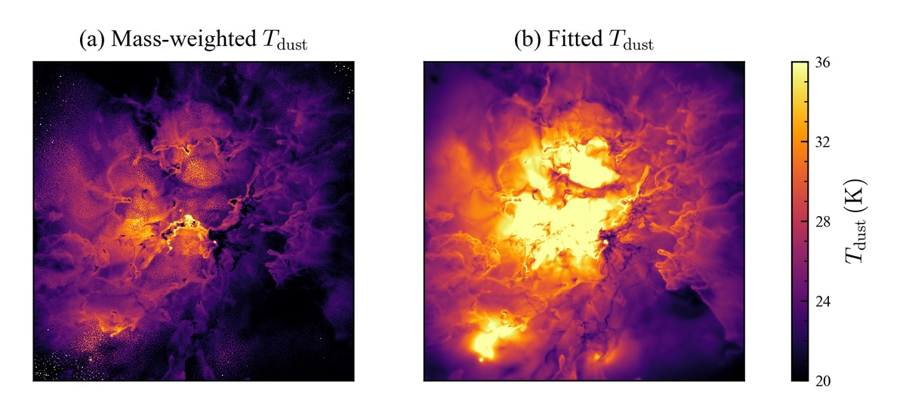

About Me
I'm a first-year Astronomy PhD student at UMass Amherst. As an astrophysicist at heart,
I love studying the cosmos through numerical simulations. I'm currently working on feedback
and feeding mechanisms for supermassive black holes. I'm very
interested in Little Red Dots, galactic evolution, star formation, and dark matter.
I'm a first-generation Mexican American from San Diego, California. I took a very untraditional path.
After a very lackluster high school, I attended San Diego Community College District as a
computer science major. I switched to physics after taking Astronomy 101 to fulfill a general course
requirement and to get away from coding (boy, was I about to find out soon). I then transferred to
San Diego State University and graduated with distinction with a B.S. in Astronomy. Now I'm at
UMass Amherst as a part of Yuan Li's group.
I love to work out, cook, watch anime, play video games, and hang out with friends.
Talks
- GalFRESCA, Sep 2025 (flash talk)
- AAS 245th Meeting, Jan 2025 (poster)
- Ensenada–San Diego Astrophysical Society Meeting, Sep 2024
- Carnegie CASSI Research Symposium, Aug 2024
Recent Works

Star Formation Efficiency in STARFORGE
Theory and observations often disagree on how efficiently giant molecular clouds turn gas into stars.
I made mock far-infrared dust emission maps of STARFORGE simulations with radiative transfer, so the
simulations could be measured the same way observers measure real clouds. Started at Carnegie
Observatories and continued as my senior thesis at San Diego State. Published in
ApJ
with Dr. Mike Grudić and Dr. Anna Rosen.